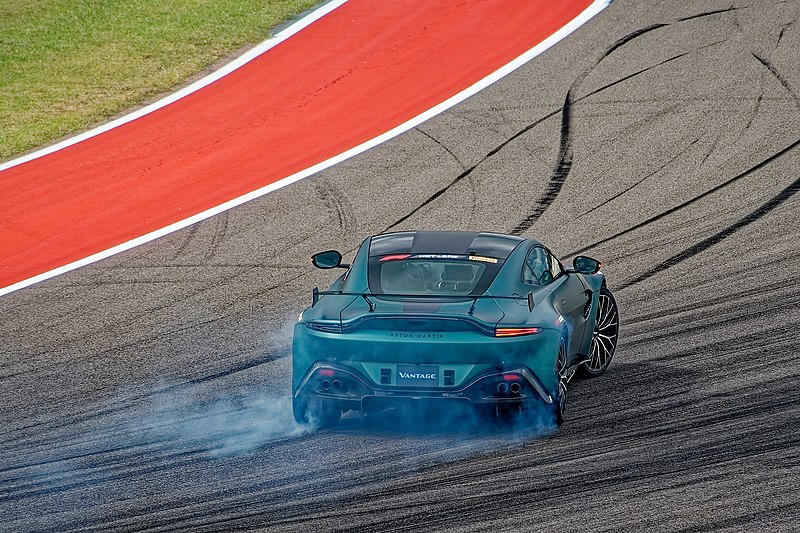

Hsitory
.jpg) Aston Martin Lagonda Global Holdings PLC is an English manufacturer of luxury sports cars and grand tourers. Its predecessor was founded in 1913 by Lionel Martin and Robert Bamford. Steered from 1947 by David Brown, it became associated with expensive grand touring cars in the 1950s and 1960s, and with the fictional character James Bond following his use of a DB5 model in the 1964 film Goldfinger. Their sports cars are regarded as a British cultural icon.[3] Aston Martin has held a Royal Warrant as purveyor of motorcars to the Prince of Wales since 1982,[4] and has over 160 car dealerships in 53 countries, making it a global automobile brand.[5] The company is traded at the London Stock Exchange and is a constituent of the FTSE 250 Index.[6] In 2003 it received the Queen's Award for Enterprise for outstanding contribution to international trade.[7] The company has survived seven bankruptcies throughout its history
Aston Martin Lagonda Global Holdings PLC is an English manufacturer of luxury sports cars and grand tourers. Its predecessor was founded in 1913 by Lionel Martin and Robert Bamford. Steered from 1947 by David Brown, it became associated with expensive grand touring cars in the 1950s and 1960s, and with the fictional character James Bond following his use of a DB5 model in the 1964 film Goldfinger. Their sports cars are regarded as a British cultural icon.[3] Aston Martin has held a Royal Warrant as purveyor of motorcars to the Prince of Wales since 1982,[4] and has over 160 car dealerships in 53 countries, making it a global automobile brand.[5] The company is traded at the London Stock Exchange and is a constituent of the FTSE 250 Index.[6] In 2003 it received the Queen's Award for Enterprise for outstanding contribution to international trade.[7] The company has survived seven bankruptcies throughout its history
MotorSport
Aston Martin is currently associated with two different racing organisations. The Aston Martin Formula One team which competes in the Formula One Championship and Aston Martin Racing which currently competes in the FIA World Endurance Championship. Both racing organisations use the Aston Martin brand, but are not directly owned by Aston Martin. The Aston Martin Formula One team is owned by major Aston Martin shareholder Lawrence Stroll, while Aston Martin Racing is operated by racing company Prodrive as part of a partnership with Aston Martin.[187][188]

Formula One
Aston Martin participated as a Formula One constructor in 1959 and 1960 entering six races over the two years but failing to score any points.[189][190] In January 2020, it was announced that the Racing Point F1 Team is due to be rebranded as Aston Martin for the 2021 season, as a result of a funding investment led by Racing Point owner Lawrence Stroll.[191][192][193] As part of the rebrand, the team switched their racing colour of BWT pink to a modern iteration of Aston Martin's British racing green.[194][195] The Aston Martin AMR21 was unveiled in March 2021 and became Aston Martin's first Formula One car after a 61-year absence from the sport
HTML Table
| course number |
course title |
semister taken |
| 04 |
chemistry |
ii |
| 8 |
Biology |
ii |
| 6 |
Maths |
ii |